AdFox — это популярная система для управления интернет-рекламой на сайте. Она была создана сторонним разработчиком, но с 2014 года принадлежит компании Яндекс. Но это не значит, что через нее вы можете показывать только РСЯ. Функционал гораздо шире.
В этой статье написано, как работать с AdFox с точки зрения рекламодателя, и как показывать рекламу, получая доход, с точки зрения вебмастера.
Для удобства пользователя и централизации своих сервисов, Яндекс объединил в одном интерфейсе AdFox и РСЯ — собственную рекламную сеть для показа баннеров на сайтах. Но не стоит их путать.
РСЯ дает возможность показа на вашем сайте текстово-графических блоков от Яндекса, настраиваемых по интересам, предпочтениям и поведению пользователей.
AdFox — это своего рода посредник между РСЯ и рекламным менеджером, который позволяет использовать дополнительные возможности управления рекламой и дает возможность интегрировать другие рекламные площадки.
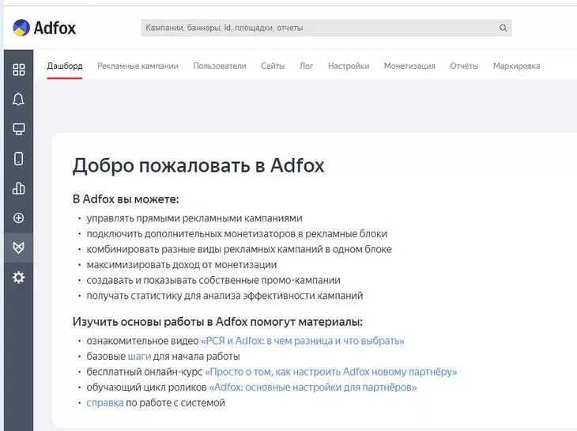
Как видно из скриншота, система действительно использует «яндексовский» интерфейс, поэтому если вы уже работали в Яндекс.Директ и РСЯ, то сможете его освоить довольно быстро. Однако многие пользователи отмечают сложности в понимании рабочего процесса и настроек, раскиданных по разным местам.
До введения запрета на рекламу Google Ads, AdFox позволял использовать на сайте объявления от «Гугла». Теперь наши возможности уже не столь широки, но и сама площадка, и другие рекламные системы предоставляют баннеры, которые можно (и нужно!) комбинировать с РСЯ. Так монетизация будет выше.
Преимущества системы видны на стартовом экране. Сам по себе AdFox не выплачивает вам вознаграждения, — его вы получаете от рекламных систем, которыми управляете через его интерфейс.
Чтобы действительно повысить монетизацию, потребуется какое-то время: надо набрать некоторый опыт в показах, прежде чем вы сможете получить максимальную выгоду.
Чтобы начать показывать рекламу на сайте, первым делом необходимо добавить в AdFox сам сайт (или несколько).
Для начала войдите в нужный аккаунт на Яндексе и создайте личный кабинет системы.
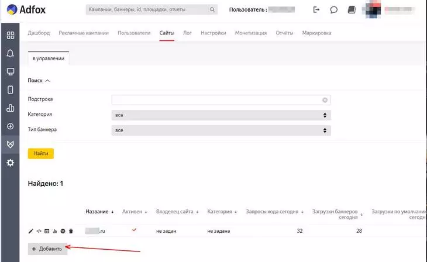
Далее перейдите на вкладку «Сайты» и добавьте новый. На картинке ниже уже виден один добавленный сайт и его показатели в системе — загрузки баннеров пользователями, переходы по ним и т.п.
При добавлении сайта укажите его название. Категорию и владельца можно пока опустить, либо настроить через вкладки «Настройки» и «Пользователи».
После этого можно выбрать нужные параметры кода, который будет размещаться на сайте:
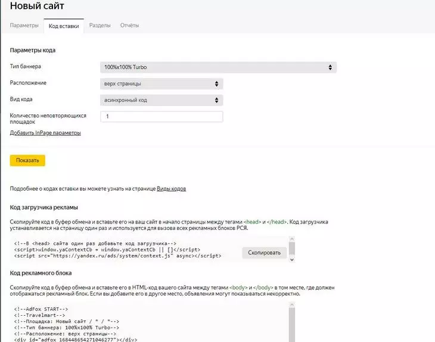
Инструкция позволит корректно разместить части кода на сайте, чтобы реклама с него попадала в кабинет AdFox и вы могли ей управлять и настраивать ее.
Чтобы разграничить ее по разделам сайта, внутри него можно настроить разделение:
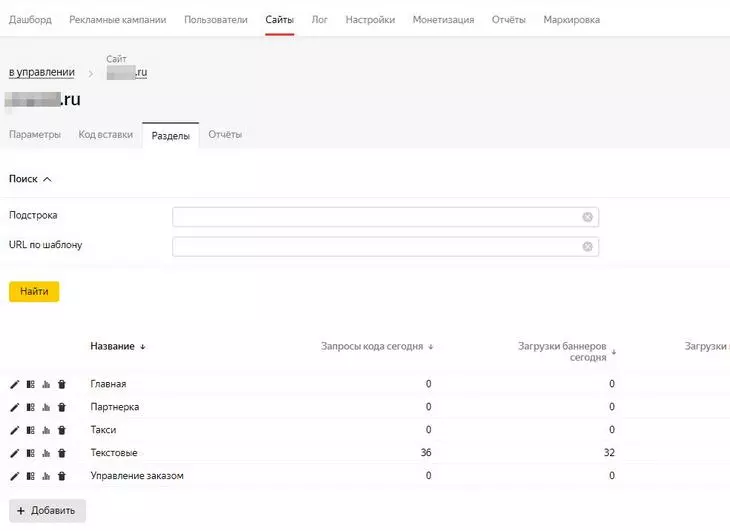
Разделы определяются по URL. Чтобы задать их, щелкните на иконку разделов рядом с названием нужного сайта на вкладке.
Перед началом работы также рекомендуется произвести дополнительные настройки системы AdFox. Делается это на соответствующей вкладке. Вот какие возможности здесь доступны:
После того как все настроено, можно подключать рекламные площадки.
Предварительно нужно понимать, что в системе AdFox действуют разные типы пользователей. Владельцы сайтов управляют площадками для размещения рекламы. Для создания рекламы же вам потребуется такой тип как рекламодатель.
Начнем с того, что добавим рекламодателя на вкладке «Пользователи». При этом создастся логин на Яндексе, так что имя пользователя должно быть уникальным. Здесь же задайте права и возможности для нового участника процесса.
Для создания первой РК переходим на вкладку «Рекламные кампании» и нажимаем кнопку «Добавить»:
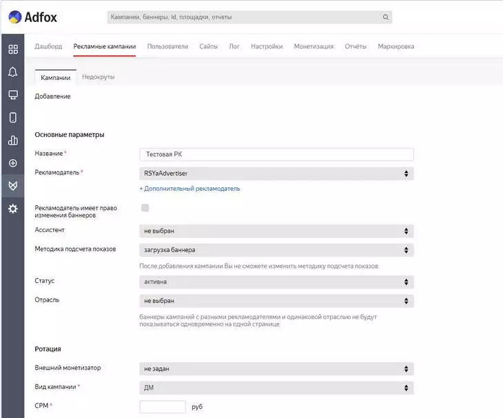
Здесь достаточно много параметров, но не все они являются обязательными.
Так, ДМ — это динамическая монетизация, выстраивающая показы автоматом с целью получения большего дохода.
Гарантия — гарантированная монетизация в случае достижения определенного числа показов/кликов.
Промо — настройка для собственных кампаний;
А именно: необходимо уведомлять Роскомнадзор о каждом рекламном креативе и каждом потраченном на рекламу рубле. Это не самый простой процесс, но наши специалисты в Texterra могут взять всю настройку рекламы на себя: вам, как заказчику, ничего не нужно будет делать.
После настройки РК выбираем сайт, на котором будет размещаться реклама, из списка созданных. Поставьте галочку рядом с тем сайтом, на котором должна работать РК.
Можно также определить для кампании раздел сайта, в котором она должна работать. Делается это на вкладке «Размещение»:
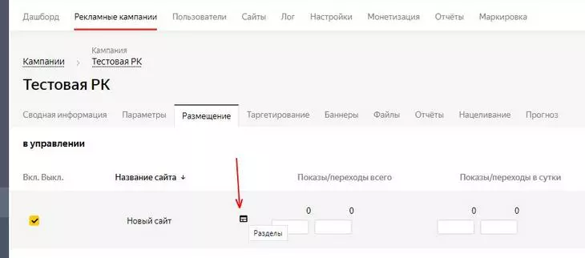
На вкладке «Кампании» теперь будет отображаться статус созданной РК:
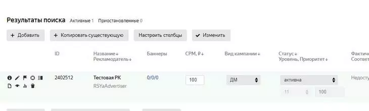
Слева от названия РК видны иконки управления. Чтобы добавить рекламные баннеры, выберите соответствующий значок и нажмите на него. Вы перейдете на страницу редактирования кампании.
На вкладке «Баннеры» нажмите на «Добавить»:
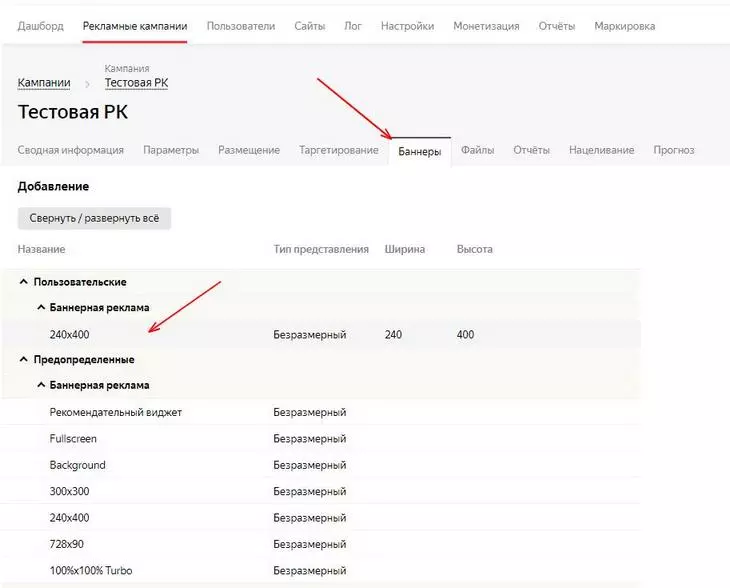
Выберите предустановленный или созданный вами в меню настроек формат. После клика по нему появится меню настройки нового баннера:
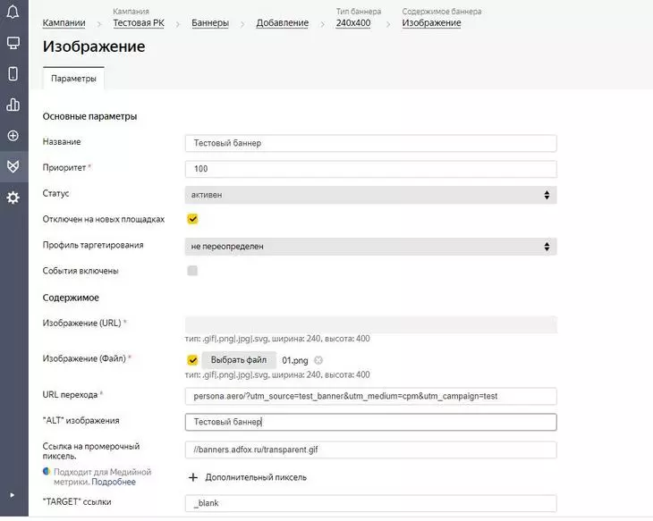
Если все задано верно, баннер появится в списке заданной кампании:
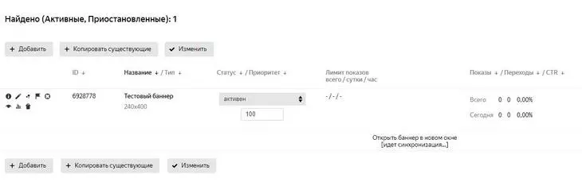
Аналогично можно создавать Flash-баннеры, видео и т.п. Изучая систему более подробно, можно также освоить параметры тонкой настройки баннеров, например на тот случай, если они не помещаются в заданном разделе сайта (при изменении верстки, разном разрешении и т.п.).
Как мы уже отмечали, AdFox позволяет в едином окне управлять рекламными кампаниями различных рекламных систем. Это расширяет возможности.
Например, можно интегрировать на площадку кампании РСЯ. Для этого сначала добавьте ваш сайт или другой ресурс в настройках рекламной сети Яндекса:
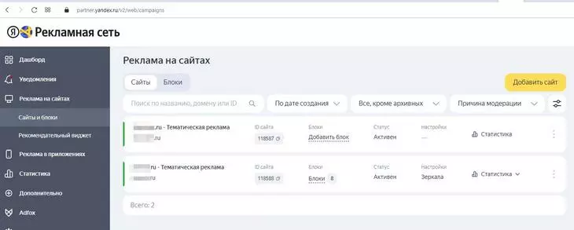
Подключение площадок выполняется на вкладке «Монетизация». Здесь, при верной настройке сайта в AdFox, появятся площадки и разделы для размещения рекламы:
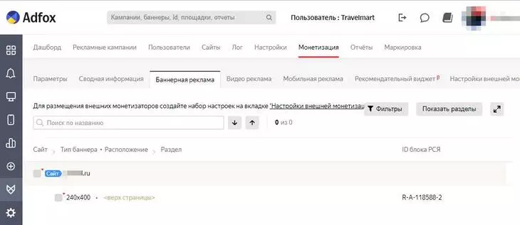
Выберите «Показать все разделы» вашего сайта, после чего добавьте блок через иконку «+» рядом с разделом.
Теперь выберите площадку — на ней будет создан специальный блок для размещения рекламы.
Далее откроется блок Рекламной сети Яндекса, в котором можно создать рекламные форматы, задать визуализацию рекламы и настроить стратегию ее показов.
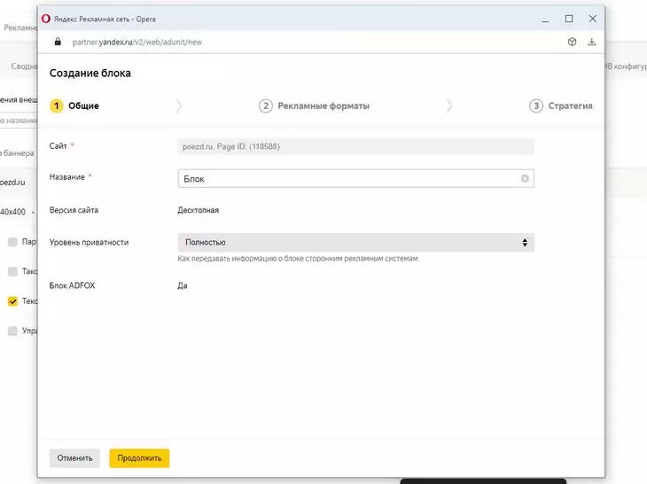
После создания рекламы и прохождения модерации, вы сможете перейти к ее показам. Управление кампанией осуществляется как через интерфейс РСЯ, так и в ЛК AdFox.
Кроме РСЯ вы можете подключить через AdFox другие источники — myTarget, HPMD, Criteo и др. Для этого используется технология Header Bidding: своего рода программатик-аукцион, который выбирает среди подключенных площадок DSP (медийная реклама) объявления с наибольшей ставкой и показывает его пользователю на сайте.
Но при этом площадка AdFox и Яндекс отказываются от ответственности за содержание рекламы. Вам нужно будет регулировать отношения с покупателями (пользователями) специальными соглашениями, чтобы не иметь проблем с законом.
Чтобы настроить технологию в AdFox, требуется настройка на нескольких этапах:
Для применения внешней монетизации лучше создать отдельные типы баннеров. После этого нужно будет настроить аккаунт AdFox по инструкции, создать специальный конфигурационный скрипт и разместить на сайте скрипт для показа рекламы.
В процессе настройки нужно совершить немало действий, но Яндекс предлагает исчерпывающие инструкции, поэтому справиться с этим будет не так сложно, как кажется на первый взгляд.
После запуска рекламных кампаний Header Bidding позволит показывать те объявления от монетизаторов, которые принесут вам более дорогие действия.
Как только вы накопите в аккаунте AdFox достаточное количество кампаний и подключений монетизаторов, вам будет интересно контролировать их работу «на лету». В этом помогут так называемые дашборды, т.е. генераторы сводной информации.
Найти их можно на главной вкладке ЛК AdFox. Чтобы автоматически выводить наиболее ходовые данные, нажмите кнопку «Добавить виджет» и выберите нужную информацию для вывода на дашборд:

Виджетов довольно много, среди них наверняка появятся те, которые будут отвечать на вопросы рекламодателя или владельца сайта. Причем визуализировать можно четырьмя разными типами:
Например, можно вывести таблицу работы баннеров на сайте:
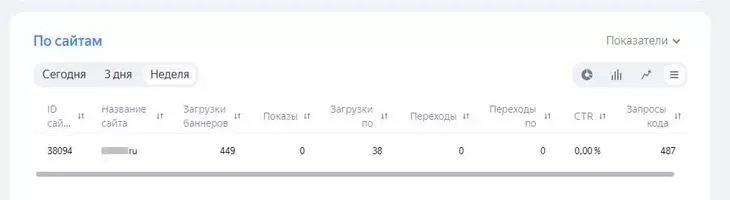
Войдя в рекламный интерфейс AdFox, сразу видно, что за неделю баннеры показывались достаточно часто, но переходов по ним не было. Это может служить маркером для принятия решения об изменениях внутри кампании, замене баннеров или даже площадок для внешней монетизации.
Кнопка «Настроить дашборд» позволяет перетаскивать виджеты, чтобы расположить их на экране наиболее удобным образом.
Возможности AdFox достаточно обширны. Вы можете использовать тонкую настройку баннеров, разделов сайта и рекламных кампаний, чтобы добиваться наилучшего отображения рекламы и соответственно — получать больше денег за размещение рекламы.
Что нужно запомнить?
Научитесь использовать дашборды — генераторы сводной информации (найти их можно на главной вкладке ЛК AdFox). Это поможет контролировать эффективность рекламных кампаний и принимать верныерешения об изменениях внутри них.